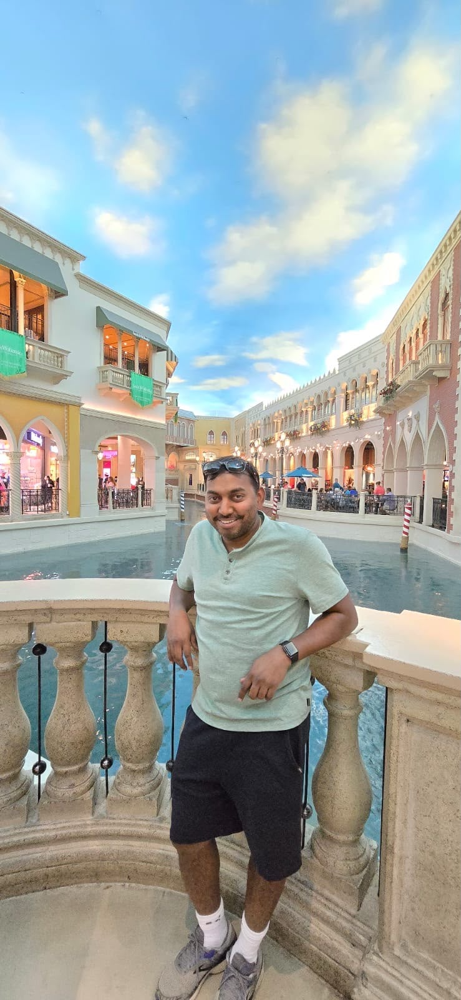
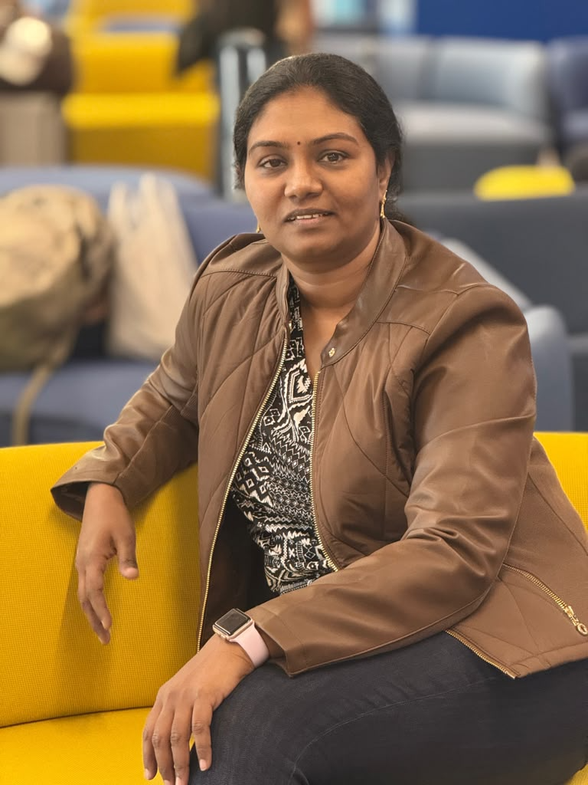

Suresh Durai
Founding Owner · Cricket supporter · Youth-development advocate
Suresh Durai and Usha Suresh are the husband-and-wife founding ownership team of the Tuticorin Sharks. Their partnership represents family leadership, shared purpose and a commitment to building meaningful opportunities for young cricketers.
With Usha Suresh as a founding franchise owner, Tuticorin Sharks proudly marks TNYPL's first woman franchise ownership milestone. Together, they bring an inclusive, community-focused vision to the inaugural season.

Founding Owner · Cricket supporter · Youth-development advocate

Founding Owner · TNYPL's first woman franchise owner · Inclusive sports leadership advocate
The Tuticorin Sharks stand for equal opportunity, disciplined player development, transparent competition and pride in representing the Tuticorin cricket community. The ownership team aims to create a franchise culture where performance, character, teamwork and respect are valued equally.
“Together, we want to build a franchise that inspires young players to dream bigger, compete with confidence and grow into responsible champions.”